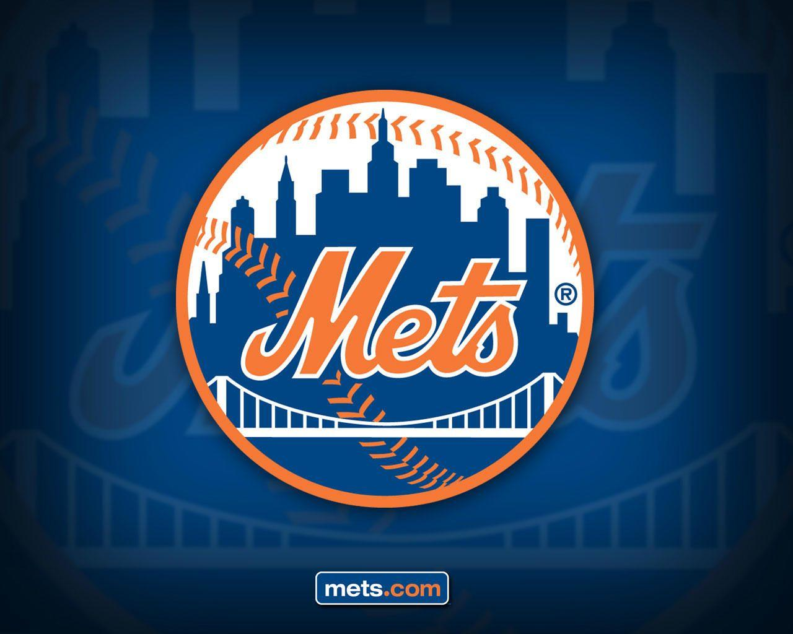
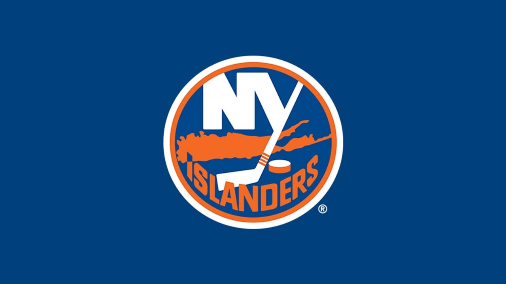
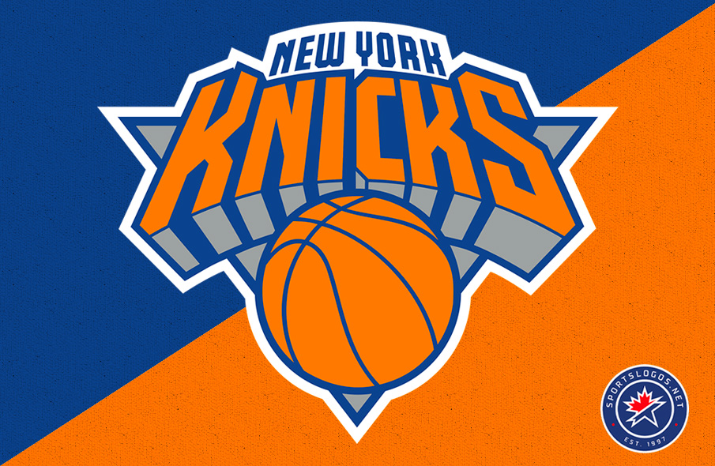

By: Joseph Sangem



New York Mets
New York Islanders
New York Knicks
These are images of my favorite New York Sports Teams. My favorite sports teams are all from New York and all of them have the same color scheme which is orange and blue. My favorite sports teams are: New York Mets, New York Islanders, and the New York Knicks